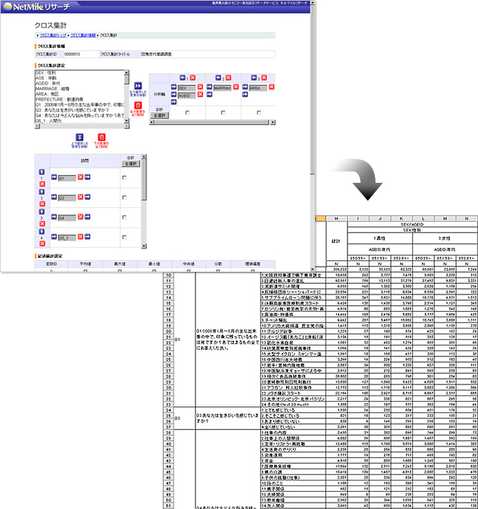

パソコンへのインストール不要！
ネットマイルリサーチ、クロス集計ツール『Easyクロス』の提供を開始
インターネット上の共通ポイントプログラムを運営する株式会社ネットマイル（本社：東京都千代田区、代表取締役社長：山本雅、以下、ネットマイル社）は、同社で提供するインターネットリサーチサービス「ネットマイルリサーチ」内で、インターネットリサーチで取得したデータをさまざまな切り口で集計・分析できるクロス集計ツール『Easyクロス』の無償提供を、本日2008年12月18日より開始いたします。
これまでのクロス集計ツールは、パソコンにソフトをインストールするものは数多くありましたが、昨今企業のセキュリティに対する意識が高まり、パソコンにツールのインストールを制限するケースも増えてきています。そこでネットマイル社では、ネットマイルリサーチへ利用登録されたすべてのお客様に対し、パソコンへのインストール不要かつ、多機能なクロス集計ツール『Easyクロス』を提供いたします。
『Easyクロス』画面イメージ
『Easyクロス』サービス概要
| サービス名 | Easyクロス |
|---|---|
| サービス開始日 | 2008年12月18日（木） |
| 概要 | ■特徴
■『Easyクロス』の主な機能
|
| URL | http://research.netmile.co.jp/service/easycross.html |
※ クロス集計とは…
2つ以上の項目をかけ合わせて行う集計方法で、アンケート回答者の属性と設問項目で集計する場合が多い。たとえば、「性別」と「年代」を、「満足度」の設問とかけ合わせることによって、「性年代別の満足度」を導き出すことができる。
【「ネットマイルリサーチ」について】 http://research.netmile.co.jp/
「ネットマイルリサーチ」とは、ネットマイル社が運営するインターネット上の共通ポイントプログラム「ネットマイル」の累計登録会員数397万人を調査モニターとして活用。圧倒的なモニター数を誇るインターネット調査サービスです。
| ネットマイル会員をモニターとして活用する基本リサーチで、「ネットマイルリサーチ」のメインサービス。インターネットを利用することで、低コストかつスピーディな調査が可能。 | |
| 小・中学生を対象としたインターネットリサーチサービス。 | |
| すでに自社で会員を所有している企業にアンケートシステムをASPで提供。 | |
| グループインタビュー、会場調査、郵送調査などを提供。 | |
| ストリーミング、複雑な機能を使ったアンケートなどを提供。 | |
| ブランド解析・消費者動向分析・モニタリングサービスの「bdb（ブランドデータバンク）」のデータベースを元に追跡調査を実施。 | |
| 分析・レポート | ネットマイルリサーチで実施したアンケート分析業務、レポート作成業務などを提供。 |
【株式会社ネットマイルについて】 http://biz.netmile.co.jp/
2000年11月設立。三井物産株式会社の連結子会社で、インターネット上の共通ポイントプログラム「ネットマイル」を運営。同社のIT事業戦略の一端を担う。
「ネットマイル」は、2001年4月にサービスを開始。累計加盟サイト数1,000サイト、累計登録会員数約397万人（2008年11月末現在）の規模は、日本最大級。
| 社名 | 株式会社ネットマイル |
|---|---|
| 代表取締役社長 | 山本 雅 |
| 所在地 | 〒101-0054 東京都千代田区神田錦町3-26 一ツ橋 SIビル 9F |
| 資本金 | 396百万円 |
| 設立 | 2000年11月7日 |
| 事業内容 |
|
| 出資企業 | 三井物産株式会社、トランスコスモス株式会社 他 |
| サービスサイト | http://www.netmile.co.jp/ |
【当リリースに関する一般お問合せ先】
株式会社ネットマイル リサーチ事業部
Email ：
URL ： http://research.netmile.co.jp/
【当リリースに関する報道関係者お問合せ先】
株式会社ネットマイル 広報担当 ： 村井
Email ： 
TEL ：